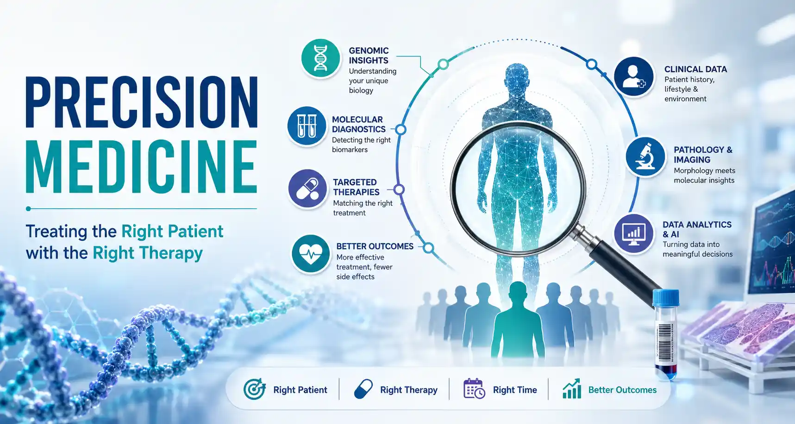

August 7, 2026
Precision Medicine: Treating the Right Patient with the Right Therapy

For decades, medical practice has largely followed a standardized approach in which patients with the same diagnosis receive similar treatments based on established clinical guidelines. While this strategy has transformed healthcare and improved countless lives, it also has its limitations — because no two patients are biologically identical. Individuals differ in their genetic makeup, molecular profile, environment, lifestyle, immune response, and disease characteristics, all of which influence how they develop illness and respond to therapy.
Precision medicine represents a fundamental shift from treating diseases based solely on their clinical presentation to understanding the unique biological characteristics of each patient. By integrating molecular diagnostics, genomics, proteomics, advanced imaging, and clinical data, clinicians are now able to identify disease at a much deeper level, predict individual risk, select the most appropriate therapy, and avoid treatments that are unlikely to be effective. What was once considered an emerging concept is now becoming an integral part of routine clinical practice across oncology, cardiology, infectious diseases, neurology, rare genetic disorders, and many other medical specialties.
The goal is not simply to treat a disease — it is to deliver the right treatment to the right patient at the right time, maximizing benefit while minimizing harm.
The Role of Diagnostics and Laboratory Medicine
Molecular Diagnostics
Detecting the right biomarkers
Targeted Therapies
Matching the right treatment
Genomic Insights
Understanding unique biology
Better Outcomes
Fewer side effects, more effective care
The success of precision medicine depends on far more than sophisticated technology. It requires the seamless integration of laboratory medicine, pathology, molecular diagnostics, radiology, clinical expertise, bioinformatics, and multidisciplinary collaboration. Molecular biomarkers can identify cancers that respond to targeted therapies, pharmacogenomic testing can predict how an individual will metabolize specific medications, and genomic sequencing can uncover inherited conditions long before symptoms appear.
At the same time, advances in liquid biopsy, next-generation sequencing, artificial intelligence, and digital pathology are enabling clinicians to generate comprehensive diagnostic insights from increasingly smaller tissue samples with greater speed and accuracy. However, these technologies are only as reliable as the quality of the specimens, the robustness of laboratory processes, and the expertise of the professionals interpreting the results.
Precision medicine should be viewed as an evolution of evidence-based healthcare — not a replacement for clinical judgment. Technology provides the data. Clinical wisdom transforms that data into better patient care.
The most meaningful decisions continue to emerge when advanced molecular information is interpreted alongside patient history, physical examination, imaging findings, conventional laboratory investigations, and histopathological assessment.
Looking Ahead
As healthcare continues to evolve, precision medicine is expected to become the standard rather than the exception. Advances in genomics, wearable technologies, artificial intelligence, digital health platforms, and population health analytics will allow clinicians to predict disease risk earlier, detect illnesses before symptoms develop, monitor treatment responses in real time, and design increasingly individualized therapeutic strategies. This transformation will not only improve patient outcomes but also reduce unnecessary investigations, minimize ineffective treatments, optimize healthcare resources, and enhance the overall patient experience.
Throughout my years in laboratory medicine, I have witnessed diagnostics progress from identifying disease to increasingly understanding the biology that drives it. Precision medicine represents the natural progression of this journey — where laboratories move beyond simply reporting results to becoming active partners in clinical decision-making.
Ultimately, the future of healthcare will not be defined by treating diseases in large populations but by understanding the unique characteristics of each individual patient. The greatest promise of precision medicine lies in its ability to combine scientific innovation with compassionate, patient-centered care, ensuring that every clinical decision is informed not only by evidence but also by the biology of the person sitting in front of us.
The best medicine has always been personal. Precision medicine simply gives us the science to make it so.